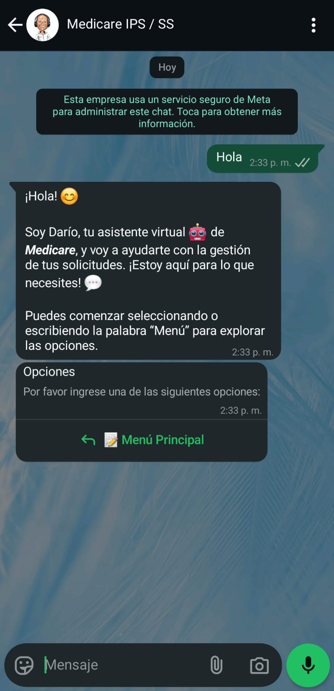
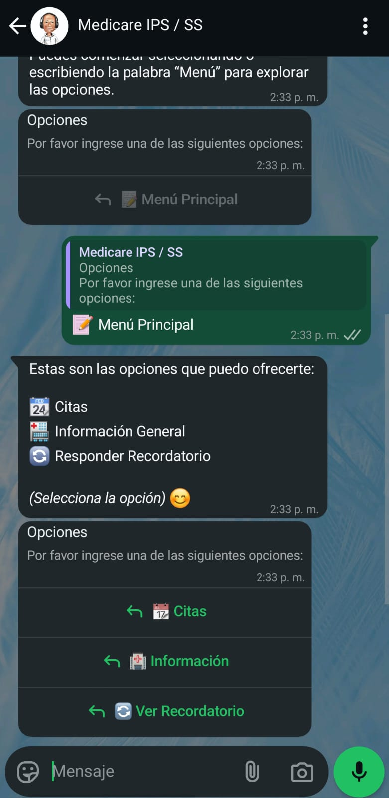
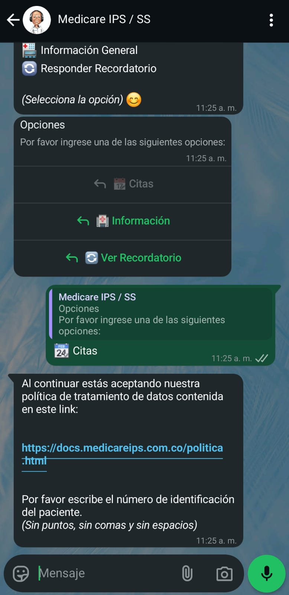
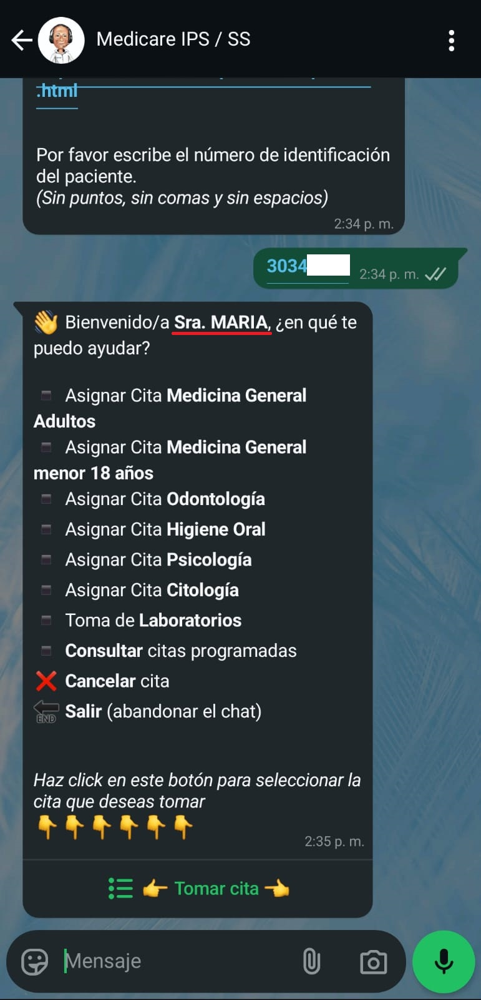
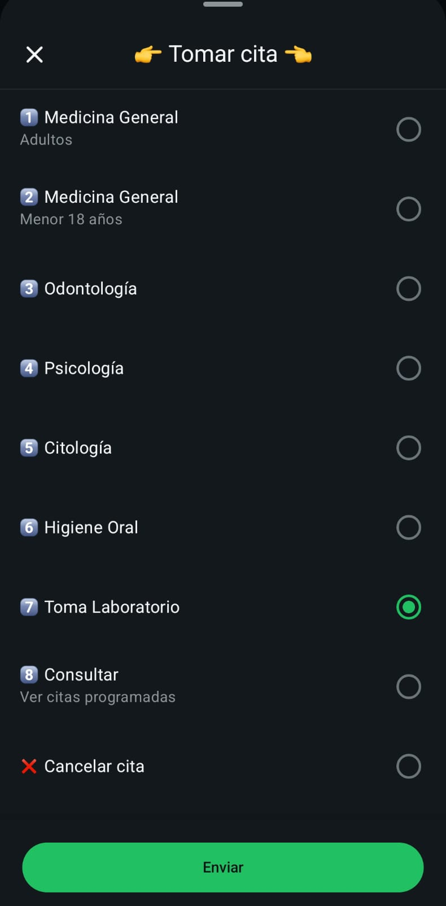
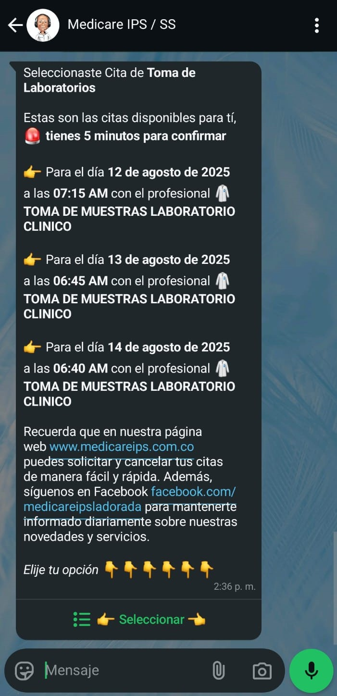
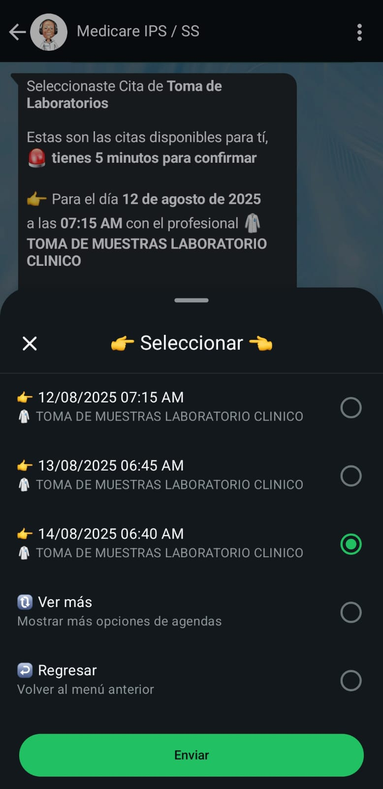
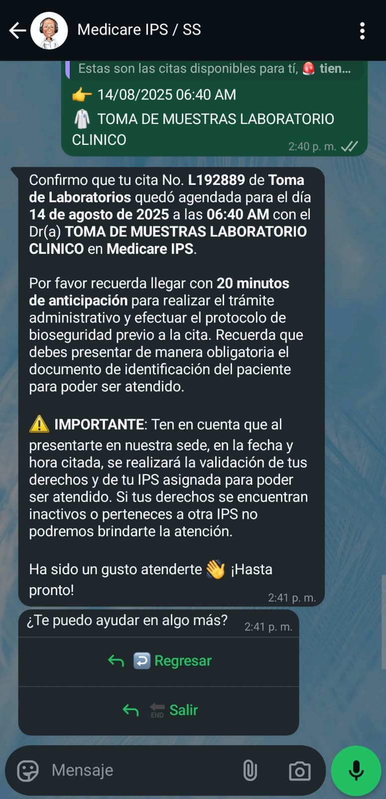

PREGUNTAS FRECUENTES
En este apartado podras visualizar las preguntas frecuentes que tiene los usuarios de MEDICARE, busca tu pregunta y clickea en esta para desplegar la respuesta.
-
Los horarios del taller de Inasistencia son distintos dependiendo del dia, los dias Lunes, Miercoles y Sabado el taller es a las 10:00 am, los dias Martes, Jueves y Viernes es a las 3:30 pm.
Posdata: El taller se realiza en sala de juntas, primer piso, estar 10 minutos antes para garantizar su asistencia, ya que la puerta se cierra muy puntual.

-
Los documentos de identidad (Registro civil, Tarjeta de Identidad, Cedula de Ciudadania, ETC) son muy importantes en medicare ips, toda persona la cual vaya a ingresar a la institucion debe de traer su documento, (Asi sea acompañante) de lo contrario no se le permitira el ingreso.
Si viene hacer cualquier tramite (Cita Medica, Vacunacion, Examenes, Reclamar Resultados, Etc) debe de traer su documento para que se le acepter el procedimiento, de lo contrario no se le atenderá.
Importante: No se aceptan fotocopias, ni licencias de conducir, ni copia laminada, ni carnets de identidad, ni foto, etc.
Si perdio su documento de identidad, debe traer su contraseña que demuestre que su identificacion esta en tramite, o en caso de robo debe poner el denuncio, o traer cualquier otro papel admitido por la registraduria.

-
En este apartado te explicaremos como pedir citas por whatsapp, primero que todo debes de escribir a este numero 321 2701208
Importante: Las citas que se dan por whatsapp son: Medicina general, Odontologia, Psicologia, Citologia, Higiene Oral, Toma de Laboratorios y tambien esta el apartado para ver sus citas programadas.
Posdata: Si usted escribe y el bot no le responte el chat puede ser porque esta escribiendo al antiguo numero, verifique que tenga el nuevo; Tambien debe tener en cuenta que en este numero solo se puede escribir por whatsapp, no se llama por telefono. Si usted no pertenece a la institucion y quiere pedir cita por particular puede escribir a este numero 317 6572911.

PASO 1#
En este apartado te explicaremos como pedir citas por whatsapp, primero que todo debes de escribir a este numero 321 2701208
Empezaremos enviando un "Hola", para que el chatbot inicie la conversacion, despues de haber enviado el mensaje espera un momento a que el chat se active y despues le respondera.
Recuerde que esta hablando con un bot (robot), no una persona, por lo que respondera las opciones predeterminadas que tiene programadas, entonces si no le responde lo que usted quiere es porque no esta programado para eso.
PASO 2#
Despues de haber leido lo que nos escribio el bot, tocaremos el boton de 📝 Menu Principal
Se desplegara un menu donde aparecen 3 opcionas las cuales son: 📆Citas, 🏥Información, 🔄Ver Recordatorio.
La opcion de 🔄Ver Recordatorio sirve para ver las citas que se han sacado desde el numero de telefono en el que escribe; 🏥Información nos permite ver informacion de medicare; Y finalmente la opcion de 📆Citas es la que usamos cuando queremos pedir citas medicas o cuando queremos cancelar alguna cita.
Como en este caso queremos pedir una cita medica, tocaremos la opcion de 📆Citas.
PASO 3#
Leeremos con atencion lo que nos dice el bot.
Nos pedira que escribamos nuestro numero de documento, SOLO el numero, sin puntos, sin espacios o cualquer otra cosa.
El link que aparece en el mensaje, es el que nos dirige al documento en el cual esta toda la politica de tratamiento de datos, esto no afecta el proceso para pedir cita (No es Necesario Presionarlo)
PASO 4#
 Cuando coloquemos el numero de documento, aparecera un mensaje el cual mostrara las citas que se pueden asignar. Revisamos que este la especialidad que necesitamos (Si no esta la cita que necesitamos, tendremos que pedir la cita de manera presencial).
Para que podamos verificar si le estamos pidiendo la cita a la persona correcta, se puede verificar en el mensaje, ya que el mensaje que envia coloca su nombre, asi se puede verificar.
Vamos a pedir Laboratorios, entonces tocaremos el boton de 👉 Tomar Cita 👈 y escogeremos la opcion de TOMA DE LABORATORIOS, finalmente tocaremos Enviar para confirmar la opcion.
PASO 5#
 A continuacion nos dara 5 minutos para poder solicitar la cita, si no lo hacemos en ese tiempo se cerrara la sesion y tendremos que volver hacer todos lo pasos anteriores.
El bot nos dara 3 opciones de cita que puedes escoger, debes de revisar muy bien el dia, hora y si gustas el medico, para que despues no hayan inconvenientes.
Tocaremos el boton de 👉 Seleccionar 👈 y se mostrara un menu en el cual apareceran las tres citas que ya vimos, si queremos pedir una cita de estas tocaremos sobre esta y le daremos al boton de enviar.
Si llegado el caso queremos otros horarios o simplemente no nos interesan esas opciones podemos seleccionar la opcion de 🔃Ver mas para buscar mas citas.
Finalmente presionaremos Enviar.
PASO 3#
Nos llegara un mensaje diciendonos que finalmente la cita fue agendada, y ya no tendremos quer hacer nada mas, recuerde llegar con 20 minutos de anticipacion para que facture.
Si quiere pedir otra cita puede presionar el boton de ↩️ regresar, si quiere salir puede dejar el mensaje o presionar el mismo boton de 🔙 salir
Si quiere saber por que razon en ciertas ocaciones le muestra otros mensajes o porque no lo deja pedir cita, en otro apartado se mostrara esto